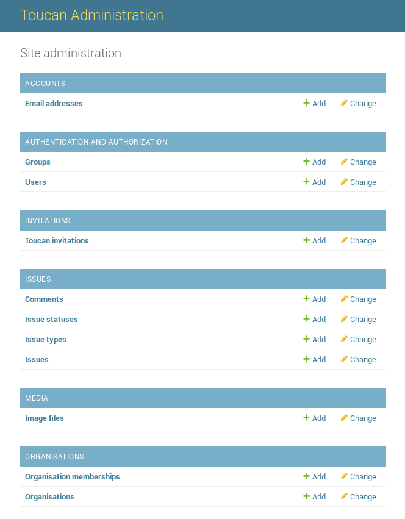
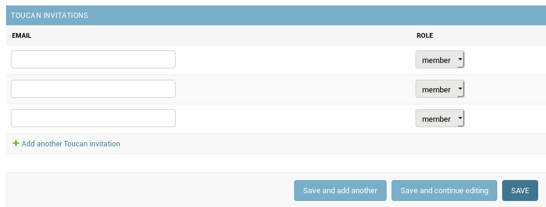

There is currently no special view for adding organisations so the following steps have to be folowed by user with administrative right through the admin interface.
Administrators can reach the Admin interface via a link at the top right of the profile page. They will be greeted by an interface similar to the following screenshot:

The actual interface might be slightly different, depending on the permissions your user has configured.
From here the steps easy:
-
Find the section Organisations and either click on Organisations to get a listing of all currently registered Organisations or use the "Add" shortcut.
-
You will be presented with a form where you will be able to create a new organisation. Only a few fields (such as name and short name) are required and adminitrators are advised to only fill out the minimum required information. Locations, Logo etc. can all be safely skipped, organisation administrators can edit these properties through the main interface at a later point.
-
One aspect of the form is important if you intend to invite users to the organisation right away. At the end of the organisation form you will find the following fields:  Here you are able to enter email addresses and choose the role the invited person will receive as soon as he signs up. It makes sense to invite a single email address during creation and assign him the admin role for the organisation. This way he will be able to invite additional members to the organisation by himself.